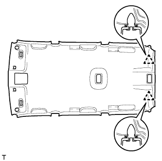
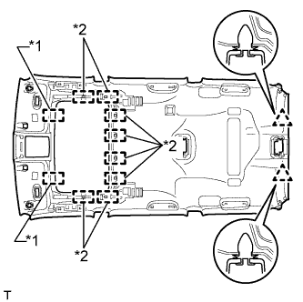

ОБИВКА КРЫШИ (для 5-х дверной модели) > УСТАНОВКА |
| 1. УСТАНОВИТЕ ЗАДНЯЮЮ РАСПОРНУЮ ДЕТАЛЬ ЛЕВОГО БОКОВОГО БРУСА № 3 |
Введите в зацепление 2 захвата, чтобы закрепить заднюю распорную деталь бокового бруса № 3.
| 2. УСТАНОВИТЕ ЗАДНЮЮ РАСПОРНУЮ ДЕТАЛЬ ПРАВОГО БОКОВОГО БРУСА № 3 |
| 3. УСТАНОВИТЕ ЗАДНЮЮ РАСПОРНУЮ ДЕТАЛЬ ЛЕВОГО БОКОВОГО БРУСА № 2 (для моделей без подушки безопасности занавесочного типа) |
Введите в зацепление 2 захвата, чтобы закрепить заднюю распорную деталь бокового бруса № 2.
| 4. УСТАНОВИТЕ ЗАДНЮЮ РАСПОРНУЮ ДЕТАЛЬ ЛЕВОГО БОКОВОГО БРУСА № 2 (для моделей без подушки безопасности занавесочного типа) |
| 5. УСТАНОВИТЕ ЗАДНЮЮ РАСПОРНУЮ ДЕТАЛЬ ЛЕВОГО БОКОВОГО БРУСА (для моделей без подушки безопасности занавесочного типа) |
Установите заднюю распорную деталь бокового бруса, закрепив ее 2 захватами.
| 6. УСТАНОВИТЕ ЗАДНЮЮ РАСПОРНУЮ ДЕТАЛЬ ПРАВОГО БОКОВОГО БРУСА (для моделей без подушки безопасности занавесочного типа) |
| 7. УСТАНОВИТЕ ЛЕВУЮ БОКОВУЮ ОБЛИЦОВОЧНУЮ НАКЛАДКУ ПОЛКИ БАГАЖНОГО ОТДЕЛЕНИЯ |
Введите в зацепление 3 захвата и 2 направляющие, чтобы установить боковую облицовочную накладку полки багажного отделения.
| 8. УСТАНОВИТЕ КРЫШКУ ГНЕЗДА В ЗАДНЕЙ БОКОВОЙ ОБЛИЦОВОЧНОЙ ПАНЕЛИ |
Введите в зацепление 3 захвата и 2 направляющие, чтобы установить крышку гнезда в задней боковой облицовочной панели.
| 9. УСТАНОВИТЕ БОКОВУЮ ОБЛИЦОВОЧНУЮ НАКЛАДКУ В ЗАДНЕЙ ЧАСТИ КУЗОВА |
Введите в зацепление 2 захвата, чтобы закрепить боковую облицовочную накладку.
| 10. УСТАНОВИТЕ КРЮК ПЛЕЧЕВОГО КРЕПЛЕНИЯ РЕМНЯ БЕЗОПАСНОСТИ ЛЕВОГО ЗАДНЕГО СИДЕНЬЯ |
Введите в зацепление захват и направляющую, чтобы закрепить держатель плечевого крепления ремня заднего сиденья.
| 11. УСТАНОВИТЕ КРЮК ПЛЕЧЕВОГО КРЕПЛЕНИЯ РЕМНЯ БЕЗОПАСНОСТИ ПРАВОГО ЗАДНЕГО СИДЕНЬЯ |
| 12. УСТАНОВИТЕ КРЫШКУ ЛЕВОЙ БОКОВОЙ ВНУТРЕННЕЙ ОБЛИЦОВКИ КРЫШИ (для моделей без заднего сиденья № 2) |
Введите в зацепление 4 захвата и 2 направляющих, чтобы установить крышку боковой внутренней облицовки крыши.
| 13. УСТАНОВИТЕ КРЫШКУ ПРАВОЙ БОКОВОЙ ВНУТРЕННЕЙ ОБЛИЦОВКИ КРЫШИ (для моделей без заднего сиденья № 2) |
| 14. УСТАНОВИТЕ НАКЛАДКУ ПЛЕЧЕВОГО КРЕПЛЕНИЯ ЛЕВОГО ЗАДНЕГО РЕМНЯ БЕЗОПАСНОСТИ В СБОРЕ |
Введите в зацепление 6 захватов, чтобы установить пластину крепления заднего ремня безопасности.
| 15. УСТАНОВИТЕ НАКЛАДКУ ПЛЕЧЕВОГО КРЕПЛЕНИЯ ПРАВОГО ЗАДНЕГО РЕМНЯ БЕЗОПАСНОСТИ В СБОРЕ |
| 16. УСТАНОВИТЕ НАКЛАДКУ ПЛЕЧЕВОГО КРЕПЛЕНИЯ ЛЕВОГО ПЕРЕДНЕГО РЕМНЯ БЕЗОПАСНОСТИ В СБОРЕ |
Введите в зацепление 5 захватов, чтобы установить пластину крепления переднего ремня безопасности.
| 17. УСТАНОВИТЕ НАКЛАДКУ ПЛЕЧЕВОГО КРЕПЛЕНИЯ ПРАВОГО ПЕРЕДНЕГО РЕМНЯ БЕЗОПАСНОСТИ В СБОРЕ |
| 18. УСТАНОВИТЕ ОБИВКУ КРЫШИ В СБОРЕ |
Внесите обивку крыши в автомобиль через дверь багажного отделения.
|  |
Для моделей без люка:
Введите в зацепление 2 фиксатора, чтобы установить обивку крыши.
|  |
Для моделей с люком:
Введите в зацепление 2 фиксатора, 2 направляющие и 8 креплений, чтобы закрепить обивку крыши.
| *1 | Направляющая |
| *2 | Фиксатор |
 |
Для моделей с развлекательно-информационной системой для задних пассажиров:
Введите в зацепление 2 фиксатора, 2 направляющих и 6 креплений, чтобы закрепить обивку крыши.
| *1 | Направляющая |
| *2 | Фиксатор |
Для моделей с развлекательно-информационной системой для задних пассажиров:
Подсоедините 2 разъема.
Подсоедините разъем и присоедините 3 зажима к правой задней стойке.
Подсоедините 2 разъема и присоедините зажим к левой задней стойке.
Подсоедините 2 разъема и присоедините 3 зажима к правой передней стойке.
Вверните болт.
Подсоедините 2 разъема и присоедините 3 зажима к левой передней стойке.
для моделей с люком
Подсоедините разъем приводного механизма.
Для моделей с датчиком дождя:
Подсоедините разъем датчика дождя
Для моделей с зеркалом с электрохромным покрытием:
Подсоедините разъем внутреннего зеркала.
| 19. УСТАНОВИТЕ ОБЛИЦОВКУ ЛЕВОГО БОКОВОГО БРУСА КРЫШИ № 1 |
 |
Установите 3 новых фиксаторов на облицовку бокового бруса крыши № 1.
| *1 | Новый зажим |
Введите в зацепление 3 фиксатора, чтобы закрепить облицовку бокового бруса крыши № 1.
| 20. УСТАНОВИТЕ ОБЛИЦОВКУ ПРАВОГО БОКОВОГО БРУСА КРЫШИ № 1 |
| 21. УСТАНОВИТЕ ОСНОВАНИЕ ТЕЛЕВИЗИОННОГО ДИСПЛЕЯ (для моделей с развлекательно-информационной системой для задних пассажиров) |
Введите в зацепление 6 захватов и 4 фиксатора, чтобы установить основание телевизионного дисплея.
| 22. УСТАНОВИТЕ ЛАМПУ ОСВЕЩЕНИЯ САЛОНА № 2 В СБОРЕ |
Установите лампу освещения салона № 1 (Нажмите здесь).
| 23. УСТАНОВИТЕ ЛАМПУ ОСВЕЩЕНИЯ САЛОНА № 1 В СБОРЕ |
Установите лампу освещения салона № 2 (Нажмите здесь).
| 24. УСТАНОВИТЕ КРЫШКУ ДЕРЖАТЕЛЯ СТОЙКИ ВНУТРЕННЕГО ЗЕРКАЛА ЗАДНЕГО ВИДА (для моделей с зеркалом с электрохромным покрытием) |
 |
Введите в зацепление 2 захвата.
 |
Закрепив 2 захвата, как показано на рисунке, установите крышку держателя стойки внутреннего зеркала заднего вида.
| 25. УСТАНОВИТЕ КРЫШКУ ДАТЧИКА ДОЖДЯ (для моделей с датчиком дождя) |
Введите в зацепление 2 захвата, чтобы установить крышку датчика дождя.
| 26. УСТАНОВИТЕ ЛАМПУ ИНДИВИДУАЛЬНОГО ОСВЕЩЕНИЯ |
Подсоедините разъем.
Закрепив 4 фиксатора, установите лампу индивидуального освещения.
| 27. УСТАНОВИТЕ ДЕРЖАТЕЛЬ ПРОТИВОСОЛНЕЧНОГО КОЗЫРЬКА |
Введите в зацепление 2 захвата.
Вставьте держатель противосолнечного козырька, чтобы закрепить его.
| 28. УСТАНОВИТЕ ЛЕВЫЙ ПРОТИВОСОЛНЕЧНЫЙ КОЗЫРЕК В СБОРЕ |
Установите козырек и закрепите его 2 винтами.
| 29. УСТАНОВИТЕ ПРАВЫЙ ПРОТИВОСОЛНЕЧНЫЙ КОЗЫРЕК |
| 30. УСТАНОВИТЕ КРЫШКУ КРОНШТЕЙНА ЛЕВОГО ПРОТИВОСОЛНЕЧНОГО КОЗЫРЬКА |
Установите крышку кронштейна противосолнечного козырька и введите в зацепление 4 захвата.
| 31. УСТАНОВИТЕ КРЫШКУ КРОНШТЕЙНА ПРАВОГО ПРОТИВОСОЛНЕЧНОГО КОЗЫРЬКА |
| 32. УСТАНОВИТЕ ВЕРХНИЙ ПОРУЧЕНЬ (для моделей с задним сиденьем № 2) |
Установите верхний поручень и закрепите его 2 болтами.
Введите в зацепление 4 захвата, чтобы закрыть 2 крышки.
| 33. УСТАНОВИТЕ ЗАДНИЙ ЛЕВЫЙ ВЕРХНИЙ ПОРУЧЕНЬ |
 |
Смонтируйте верхний поручень, 2 фиксатора и 2 крышки, как показано на рисунке.
Установите верхний поручень.
| 34. УСТАНОВИТЕ ЗАДНИЙ ПРАВЫЙ ВЕРХНИЙ ПОРУЧЕНЬ |
| 35. УСТАНОВИТЕ ВЕРХНИЙ ПОРУЧЕНЬ В СБОРЕ |
 |
Смонтируйте верхний поручень, 2 фиксатора и 2 крышки, как показано на рисунке.
Установите верхний поручень.
| 36. УСТАНОВИТЕ ЛЕВУЮ ЗАДНЮЮ БОКОВУЮ ОБЛИЦОВОЧНУЮ ПАНЕЛЬ В СБОРЕ |
Для моделей с задним сиденьем № 2:
Введите в зацепление 4 фиксатора и 2 направляющие и пропустите напольное крепление ремня безопасности заднего сиденья № 2 через заднюю боковую облицовочную панель.
Введите в зацепление 7 фиксаторов и 2 направляющие, чтобы закрепить заднюю боковую облицовочную панель.
| 37. УСТАНОВИТЕ ПРАВУЮ ЗАДНЮЮ БОКОВУЮ ОБЛИЦОВОЧНУЮ ПАНЕЛЬ В СБОРЕ |
| 38. УСТАНОВИТЕ ЛЕВУЮ НАРУЖНУЮ ПЕРЕДНЮЮ ОБЛИЦОВОЧНУЮ ПАНЕЛЬ В СБОРЕ |
Пропустите напольное крепление ремня безопасности заднего сиденья № 1 через переднюю боковую облицовочную панель.
Введите в зацепление 2 фиксатора и 2 направляющие, чтобы закрепить переднюю наружную облицовочную панель.
| 39. УСТАНОВИТЕ ПРАВУЮ НАРУЖНУЮ ПЕРЕДНЮЮ ОБЛИЦОВОЧНУЮ ПАНЕЛЬ В СБОРЕ |
| 40. УСТАНОВИТЕ ЛЕВУЮ БОКОВУЮ ОБЛИЦОВОЧНУЮ ПАНЕЛЬ ПОЛКИ БАГАЖНОГО ОТДЕЛЕНИЯ В СБОРЕ |
Для моделей без заднего сиденья № 2:
Пропустите опору рычага фиксации спинки заднего сиденья через боковую облицовочную панель полки багажного отделения.
Установите боковую облицовочную панель полки багажного отделения, закрепив ее 5 фиксаторами и 8 захватами.
Вверните 4 болта и 2 винта.
Введите в зацепление 6 захватов и 2 направляющих, чтобы установить опору рычага фиксации спинки заднего сиденья на боковую облицовочную панель полки багажного отделения.
Установите напольное крепление ремня безопасности заднего сиденья № 1 и закрепите его болтом.
Для моделей с задним сиденьем № 2:
Установите боковую облицовочную панель полки багажного отделения, закрепив ее 4 фиксаторами и 8 захватами.
Вверните 2 болта и 2 винта.
Установите напольное крепление ремня безопасности заднего сиденья № 2 и закрепите его болтом.
Установите напольное крепление ремня безопасности заднего сиденья № 1 и закрепите его болтом.
| 41. УСТАНОВИТЕ ПРАВУЮ БОКОВУЮ ОБЛИЦОВОЧНУЮ ПАНЕЛЬ ПОЛКИ БАГАЖНОГО ОТДЕЛЕНИЯ |
Для моделей без заднего сиденья № 2:
Подсоедините все разъемы.
Пропустите опору рычага фиксации спинки заднего сиденья через боковую облицовочную панель полки багажного отделения.
Установите боковую облицовочную панель полки багажного отделения, закрепив ее 5 фиксаторами и 8 захватами.
Вверните 4 болта и винт.
Введите в зацепление 6 захватов и 2 направляющих, чтобы установить опору рычага фиксации спинки заднего сиденья на боковую облицовочную панель полки багажного отделения.
Установите напольное крепление ремня безопасности заднего сиденья № 1 и закрепите его болтом.
Для моделей с задним сиденьем № 2:
Подсоедините все разъемы.
Установите боковую облицовочную панель полки багажного отделения, закрепив ее 4 фиксаторами и 8 захватами.
Вверните 2 болта и винт.
Установите напольное крепление ремня безопасности заднего сиденья № 2 и закрепите его болтом.
Установите напольное крепление ремня безопасности заднего сиденья № 1 и закрепите его болтом.
| 42. УСТАНОВИТЕ ВЕРХНИЙ ПОРУЧЕНЬ В СБОРЕ (для моделей с задним сиденьем № 2) |
Установите верхний поручень и закрепите его 2 болтами.
| 43. УСТАНОВИТЕ ЗАГЛУШКУ ВЕРХНЕГО ПОРУЧНЯ (для моделей с задним сиденьем № 2) |
Введите в зацепление 2 захвата и установите заглушку верхнего поручня.
| 44. УСТАНОВИТЕ ПЕРЕДНЮЮ БОКОВУЮ ОБЛИЦОВОЧНУЮ НАКЛАДКУ БАГАЖНОГО ОТДЕЛЕНИЯ (для моделей с задней крышкой) |
Введите в зацепление 2 захвата, чтобы закрепить переднюю боковую облицовочную накладку полки багажного отделения
| 45. УСТАНОВИТЕ КОЛПАЧОК КРЕПЛЕНИЯ ЗАДНЕЙ КРЫШКИ № 1 (для моделей без задней крышки) |
Введите в зацепление 2 захвата, чтобы закрепить колпачок крепления задней крышки № 1.
| 46. УСТАНОВИТЕ ЗАЩЕЛКУ ОБЛИЦОВКИ БАГАЖНОГО ОТДЕЛЕНИЯ № 1 |
Установите защелку облицовочной панели багажного отделения № 1, повернув ее по часовой стрелке.
| 47. УСТАНОВИТЕ НАКЛАДКУ КРЕПЛЕНИЯ ПОЯСНОГО РЕМНЯ БЕЗОПАСНОСТИ ЗАДНЕГО СИДЕНЬЯ № 1 |
Введите в зацепление 3 захвата, чтобы установить накладку крепления поясного ремня безопасности заднего сиденья № 1.
| 48. УСТАНОВИТЕ ЗАДНИЙ НАПОЛЬНЫЙ КОВРИК В СБОРЕ (для моделей без заднего сиденья № 2) |
Введите в зацепление 4 захвата, чтобы установить задний напольный коврик.

| *A | для моделей без направляющей полки багажного отделения | *B | для моделей с направляющей полки багажного отделения |
| *C | Для сидений с противоположным расположением | - | - |
| 49. УСТАНОВИТЕ ЛЕВУЮ БОКОВУЮ НАПРАВЛЯЮЩУЮ ПОЛА БАГАЖНОГО ОТДЕЛЕНИЯ (для моделей с направляющей полки багажного отделения) |
Установите боковую направляющую пола, закрепив ее 3 болтами.
| 50. УСТАНОВИТЕ ПРАВУЮ БОКОВУЮ НАПРАВЛЯЮЩУЮ ПОЛА БАГАЖНОГО ОТДЕЛЕНИЯ (для моделей с направляющей полки багажного отделения) |
| 51. УСТАНОВИТЕ ЗАДНЮЮ ОПОРНУЮ ПАНЕЛЬ КОВРИКА ЗАДНЕГО ПОЛА (для моделей без заднего сиденья № 2) |
Введите в зацепление 5 фиксаторов и 4 захвата, чтобы установить заднюю опорную пластину коврика заднего пола.
| 52. УСТАНОВИТЕ ПАНЕЛЬ ПОЛКИ БАГАЖНОГО ОТДЕЛЕНИЯ № 1 В СБОРЕ (для моделей без заднего сиденья № 2) |
Установите панель полки багажного отделения № 1, закрепив ее фиксатором.
| 53. УСТАНОВИТЕ ПЕРЕДНЮЮ ОБЛИЦОВОЧНУЮ НАКЛАДКУ БАГАЖНОГО ОТДЕЛЕНИЯ (для моделей без заднего сиденья № 2) |
 |
Установите защелку ремня для удержания багажа и переднюю облицовочную накладку багажного отделения и закрепите их болтом.
| *1 | Защелка ремня для удержания багажа |
Введите в зацепление 4 захвата для установки колпачка.
| 54. УСТАНОВИТЕ ЗАДНЮЮ КРЫШКУ В СБОРЕ (для моделей с задней крышкой) |
Установите заднюю крышку.
| 55. УСТАНОВИТЕ ОБЛИЦОВОЧНУЮ НАКЛАДКУ ЛЕВОЙ СРЕДНЕЙ СТОЙКИ КУЗОВА |
Пропустите напольные крепления наружных ремней передних сидений через облицовочную накладку средней стойки кузова.
Установите облицовочную накладку средней стойки кузова и закрепите 2 фиксатора и 2 направляющие.
Вверните болт.
| 56. УСТАНОВИТЕ ОБЛИЦОВОЧНУЮ НАКЛАДКУ ПРАВОЙ СРЕДНЕЙ СТОЙКИ КУЗОВА |
| 57. УСТАНОВИТЕ ВЕРХНИЙ ПОРУЧЕНЬ № 2 |
Введите в зацепление 2 захвата, чтобы установить верхний поручень № 2.
Вверните 2 болта.
| 58. УСТАНОВИТЕ ЛЕВУЮ ЗАГЛУШКУ ВЕРХНЕГО ПОРУЧНЯ № 2 |
Введите в зацепление 2 захвата, чтобы установить переднюю заглушку верхнего поручня № 2.
| 59. УСТАНОВИТЕ ЗАГЛУШКУ ПРАВОГО ВЕРХНЕГО ПОРУЧНЯ № 2 |
| 60. УСТАНОВИТЕ НИЖНЮЮ ОБЛИЦОВОЧНУЮ НАКЛАДКУ ЛЕВОЙ СРЕДНЕЙ СТОЙКИ КУЗОВА |
Установите нижнюю облицовочную накладку средней стойки кузова и введите в зацепление 4 захвата и 2 фиксатора.
Установите напольное крепление наружных ремней безопасности передних сидений и закрепите его болтом.
| 61. УСТАНОВИТЕ НИЖНЮЮ ПРАВУЮ ОБЛИЦОВОЧНУЮ НАКЛАДКУ СРЕДНЕЙ СТОЙКИ КУЗОВА |
| 62. УСТАНОВИТЕ НАКЛАДКУ КРЕПЛЕНИЯ ПОЯСНОГО РЕМНЯ БЕЗОПАСНОСТИ |
Введите в зацепление 3 захвата, чтобы установить накладку крепления поясного ремня безопасности
| 63. УСТАНОВИТЕ УПЛОТНИТЕЛЬ ОБШИВКИ ПРОЕМА ЛЕВОЙ ЗАДНЕЙ ДВЕРИ |
 |
Совместите нанесенную краской отметку на уплотнителе обшивки проема задней двери с отмеченным положением на автомобиле и установите уплотнитель обшивки проема задней двери, как показано на рисунке.
| *1 | Метка, нанесенная краской |
| *2 | Положение метки |
| 64. УСТАНОВИТЕ УПЛОТНЕНИЕ ПРОЕМА ЗАДНЕЙ ПРАВОЙ ДВЕРИ |
| 65. УСТАНОВИТЕ ОПОРНУЮ НАКЛАДКУ ЛЕВОЙ ЗАДНЕЙ ДВЕРИ |
Введите в зацепление 3 фиксатора, 6 захватов и 2 направляющие, чтобы установить опорную накладку задней двери.
| 66. УСТАНОВИТЕ ОПОРНУЮ НАКЛАДКУ ПРАВОЙ ЗАДНЕЙ ДВЕРИ |
| 67. УСТАНОВИТЕ ЛЕВУЮ ЗАДНЮЮ БОКОВУЮ ОПОРНУЮ НАКЛАДКУ (для моделей с задним сиденьем № 2) |
Установите заднюю боковую опорную накладку и закрепите ее 2 болтами.
| 68. УСТАНОВИТЕ ПРАВУЮ ЗАДНЮЮ БОКОВУЮ ОПОРНУЮ НАКЛАДКУ (для моделей с задним сиденьем № 2) |
| 69. УСТАНОВИТЕ ЗАДНЮЮ НАКЛАДКУ ПОРОГА ПОЛА № 1 (для моделей с задним сиденьем № 2) |
Введите в зацепление 2 захвата, чтобы установить заднюю накладку порога пола № 1.
| 70. УСТАНОВИТЕ ОБИВКУ ЛЕВОЙ СТОЙКИ ВЕТРОВОГО СТЕКЛА |
Введите в зацепление 3 направляющих, чтобы установить обивку стойки ветрового стекла.
| 71. УСТАНОВИТЕ ОБИВКУ ПРАВОЙ СТОЙКИ ВЕТРОВОГО СТЕКЛА |
| 72. УСТАНОВИТЕ ВЕРХНИЙ ПОРУЧЕНЬ № 1 |
Введите в зацепление 2 захвата, чтобы установить верхний поручень № 1.
Вверните 2 болта.
| 73. УСТАНОВИТЕ ЛЕВУЮ ПЕРЕДНЮЮ ЗАГЛУШКУ ВЕРХНЕГО ПОРУЧНЯ № 1 |
Введите в зацепление 2 захвата, чтобы установить переднюю заглушку верхнего поручня № 1.
| 74. УСТАНОВИТЕ ПРАВУЮ ПЕРЕДНЮЮ ЗАГЛУШКУ ВЕРХНЕГО ПОРУЧНЯ № 1 |
| 75. УСТАНОВИТЕ УПЛОТНИТЕЛЬ ОБШИВКИ ПРОЕМА ЛЕВОЙ ПЕРЕДНЕЙ ДВЕРИ |
 |
Совместите нанесенную краской отметку на уплотнителе обшивки проема передней двери с отмеченным положением на автомобиле и установите уплотнитель обшивки проема передней двери, как показано на рисунке.
| *1 | Метка, нанесенная краской |
| *2 | Положение метки |
| 76. УСТАНОВИТЕ УПЛОТНИТЕЛЬ ОБШИВКИ ПРОЕМА ПРАВОЙ ПЕРЕДНЕЙ ДВЕРИ |
| 77. УСТАНОВИТЕ БОКОВУЮ ОБЛИЦОВОЧНУЮ НАКЛАДКУ С ЛЕВОЙ СТОРОНЫ КОЖУХА |
Введите в зацепление фиксатор и захват, чтобы установить боковую облицовочную накладку кожуха.
Установите фиксатор.
| 78. УСТАНОВИТЕ БОКОВУЮ ОБЛИЦОВОЧНУЮ НАКЛАДКУ С ПРАВОЙ СТОРОНЫ КОЖУХА |
| 79. УСТАНОВИТЕ ОПОРНУЮ НАКЛАДКУ ЛЕВОЙ ДВЕРИ В СБОРЕ |
Введите в зацепление 4 фиксатора, 10 захватов и 2 направляющие, чтобы установить опорную накладку двери.
| 80. УСТАНОВИТЕ ОПОРНУЮ НАКЛАДКУ ПРАВОЙ ДВЕРИ В СБОРЕ |
| 81. УСТАНОВИТЕ СПИНКУ ЗАДНЕГО СИДЕНЬЯ № 1 В СБОРЕ (для моделей с задним сиденьем № 1) |
Для складываемого вдвое раздельного сиденья 60/40 с левой стороны:
Установите спинку заднего сиденья № 1 в сборе (Нажмите здесь).
Для складываемого вдвое раздельного сиденья 60/40 с правой стороны:
Установите спинку заднего сиденья № 1 в сборе (Нажмите здесь).
| 82. УСТАНОВИТЕ ЗАДНЕЕ СИДЕНЬЕ № 1 В СБОРЕ (для моделей с задним сиденьем № 1) |
Для выдвижного раздельного сиденья 60/40 с функцией облегчения посадки с левой стороны:
Установите заднее сиденье № 1 в сборе (Нажмите здесь).
Для выдвижного раздельного сиденья 60/40 с функцией облегчения посадки с правой стороны:
Установите заднее сиденье № 1 в сборе (Нажмите здесь).
| 83. УСТАНОВИТЕ ЗАДНЕЕ СИДЕНЬЕ № 2 В СБОРЕ (для моделей с задним сиденьем № 2) |
Для сидений с ручным приводом:
Установите заднее сиденье № 2 в сборе (Нажмите здесь).
Для сидений с электроприводом:
Установите заднее сиденье № 2 в сборе (Нажмите здесь).
Для моделей с противоположно расположенными сиденьями:
Установите заднее сиденье № 2 в сборе (Нажмите здесь).
| 84. ПОДСОЕДИНИТЕ ПРОВОД К ОТРИЦАТЕЛЬНОМУ ВЫВОДУ АККУМУЛЯТОРНОЙ БАТАРЕИ |